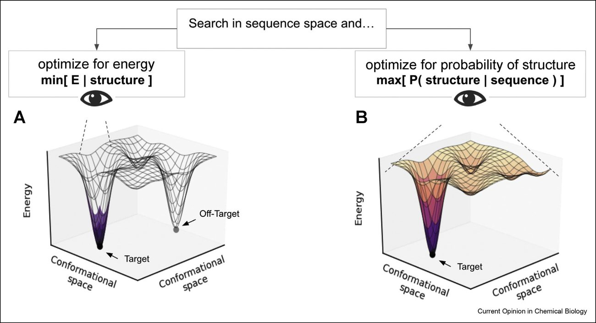

Structure-based protein design with deep learning
Abstract
Since the first revelation of proteins functioning as macromolecular machines through their three dimensional structures, researchers have been intrigued by the marvelous ways the biochemical processes are carried out by proteins. The aspiration to understand protein structures has fueled extensive efforts across different scientific disciplines. In recent years, it has been demonstrated that proteins with new functionality or shapes can be designed via structure-based modeling methods, and the design strategies have combined all available information - but largely piece-by-piece - from sequence derived statistics to the detailed atomic-level modeling of chemical interactions. Despite the significant progress, incorporating data-derived approaches through the use of deep learning methods can be a game changer. In this review, we summarize current progress, compare the arc of developing the deep learning approaches with the conventional methods, and describe the motivation and concepts behind current strategies that may lead to potential future opportunities.
Introduction
Proteins with three-dimensional (3D) structures leverage the spatial organization of amino acids to achieve function. An enzyme active site, for example, may involve a network of hydrogen-bonded amino acid residues to induce the chemical environment for catalysis. A fundamental understanding of the highly coordinated sequence-structureefunction relationship allows for the design of proteins. In this process, 3D structural models are usually built to satisfy the functional constraints derived from design objectives, and accurate energy models are needed to guide the movements of the atoms in the simulated system [1]. With the advent of deep learning (DL) algorithms, new approaches are being developed to improve the methodology with data-driven statistics.
Many DL methods focus on sequence generation, using DL to approximate the mapping of sequence to function. Their ability to synthesize new sequences is akin to the process of consensus sequence design, but leverages DL algorithms for a more powerful extraction and contextualization of the underlying features in sequences. There have been successful experiments showing great promise to this approach in improving known proteins, since these types of model are trained or fine tuned on related sequences; however, their generalizability to designing novel functions, such as new folds, binding interfaces or enzymes, remains to be studied. This article focuses on structure-based approaches, and we refer readers to the review by Wu et al. on the discussion of sequence-based methods.
In this review, we direct our discussion to the concepts underlying the structure-based protein design approaches (as outlined in Figure 1) and discuss the advantages offered by DL over conventional methods. Several recent reviews have covered technical discussions of generative modeling, and we will not repeat them here [2,3].
Structure generation DL tools for structural design rely on their abilities to produce realistic protein backbones via generative modeling
Protein Cartesian coordinates can be represented as a 1D list of geometric measurements including distances, angles, and dihedrals along the polymer backbone, or 2D pairwise matrices for every pair of residues. These descriptors are invariant to translation and rotation of the molecule, making them ideal input features or output predictions of common DL architectures. 1D representations allow for adaptation of recurrent neural networks and transformers often used for sequential data [4,5]; 2D representations allow for adaptation of computer vision and image classification algorithms, where each pairwise feature can be thought of as a color channel [6]. For example, semantic segmentation of a 2D distance matrix d like the process of finding objects in a photo d can readily identify patterns corresponding to constituent domains even if the domain structure consists of distal regions of the chain [6]. When each residue is assessed for its likelihood of belonging in the fold of the parent structure, the coarse grain residue-level probability surprisingly correlates with structure Comparison of conventional and DL design workflow. The goal of protein design is to obtain final sequences that would satisfy the design constraints, such as structural geometry, stability, binding interaction or other functionalities. Structure-based methods use protein structural features to guide the tasks while sequence-based models bypass structural modeling to create new sequences based on underlying patterns.
2D convolutions across distance matrices allow DL metrics to recognize fold-level structural features otherwise difficult to describe with conventional heuristics. A wide variety of featurizations incorporating contact boundaries, geometric transformations or graph networks of connectivities have been widely used with DL methods to describe proteins as well [7e13]. But they have thus far rarely been used for structure generation because coordinate recovery from these have been difficult, due to potential errors and degeneracy of the representations.
Generative models could be trained to output proteins through these 1D or 2D representations but require a second step to recover the cartesian coordinates. A neural network is generative when it is trained to capture the distribution of the data, and from such models, one could draw new samples that should be valid according to the features that the network captures. However, generative models that employee decoders often return globally incoherent representations, leading to inaccurate reconstruction of 3D coordinates. This is especially true for the 1D representation, where even small errors in backbone torsion are propagated and magnified, leading to unrealistic structures.
For valid Euclidean distance matrices, there exists a closed-form solution to convert distance matrices into 3D structures via eigendecomposition of their Gramian matrix [14]; the top three components are the coordinates. Although the method is fairly robust to random noise, if the noise is more systematic (such as one produced by a neural network (NN)), additional protein structure modeling tools or DL models are then required to disambiguate the predicted distance matrices [15]. Though there has been some work in generating 2D contact maps or adjacency matrices of proteins, from which graphs are sampled [16,17], these graphs are typically of insufficient resolution or degenerate to recover detailed bond geometries without protein priors [18].
Generating 2D distance matrices is analogous to creating deepfake images of faces, and this parallel allows the development of generative models to perform similar tasks on proteins [19]. With "inpainting" performed on a 2D distance matrix d where portions of an image are masked and filled by the DL model d the corresponding operation to the 3D protein structure is a loop modeling problem [19,20]. Generative adversarial network (GAN)-based algorithms [21] are able to create realistic atom placements with proper closure geometry in structural inpainting. GAN was also shown to be capable of creating an entire protein chain from scratch, not just loops, with accurate secondary structures. A VAE-based method further introduced conditional generation of distance matrices with latent vector bits set to secondary structure elements [22].
To test the ability of NNs to translate 2D distance matrices into coordinates, an NN was trained to convert the 2D output of a GAN into coordinates and provide a gradient signal to the latent vector of the generator model [23]. This pipeline was found to provide a means to incorporate energy-based optimization on generated structures. This was developed specifically for generative modeling of structures, but NNs developed for protein folding and dynamics are also related and can create coordinates in an end-to-end fashion [4,24e28].
Methods that directly generate coordinates by NN
To circumvent the need for additional methods to recover atomic coordinates from 2D maps, a foldspecific generative model, Ig-VAE, was developed to directly generate 3D coordinates with explicit loss functions to preserve the chemical bond geometry and dihedral angle distributions [29]. Using immunoglobulin structures as training examples, the model was able to create novel interpolated samples d in terms of backbone dihedral combinations d unseen in the Protein Data Bank (PDB). As a design tool, this model is also shown to use a loss function to direct complementarity-determining region (CDR) conformations via latent space optimization to satisfy design objectives. This is an example that leverages the use of DL to account for backbone flexibility. Compared to conventional fragment sampling-based methods, the DL-based method offers efficiency and continuous (but data-biased) coverage of the conformational space.
Sequence design given a 3D protein backbone
The task to design a sequence for a given 3D structure is often called the inverse folding problem. Classical protein design seeks to maximize P(sequence|structure) by minimizing the energy of the target structure by Markov chain Monte Carlo (MCMC)-based search over side chain identities and conformations. The energy function is based on a combination of physical and statistical potentials. Examples of knowledge-based (statistical) potentials include approximations to account for bulk solvent effects and rotameric probability [30], among others. They are important because some of the statistical terms supplement the accuracy of molecular mechanics force fields and other terms enhance calculation speed. Most importantly, they can potentially be learned from data.
Some limitations of the conventional design methods include the lack of sequence diversity and the limited capability to design multi-body interactions. The designed sequences tend to converge on the input backbone; while convergence is desired from an optimization perspective, it inherently limits the output, and does not account for the flexibility and dynamics of protein structures. As for multibody interactions, which are important for protein function (e.g., a catalytic triad), conventionally specialized search algorithms are required to design specific interacting networks [31,32]. DL methods can potentially address these limitations.
Deep learning-based sequence design algorithms
The key to finding solutions to the sequence design problem is to maximize the joint probability of amino acids under a fixed backbone, and the joint probability is usually optimized through sampling, due to the discrete nature of amino acid combinations and the rugged energy landscape. Without DL, dTERMen [33], uses sequence-structure compatibility to guide designs, showing that a statistical framework can be used to redesign proteins. Most DL algorithms for design have been developed to generate sequence probability profiles to facilitate the introduction of mutations by the top ranking probability amino acids (top-k), but not explicitly tasked for full combinatorial protein redesign [34e39]. To address the combinatorial problem, the fixed backbone sequence design problem can be posed as a constraint satisfaction problem (CSP) and can be approached with a deep learning solver the same way one would solve a sudoku puzzle [40]. Alternatively, MCMC can directly search for sequence solutions under a data-derived metric [41]. Lastly, an autoregressive model can also produce full sequences by successively predicting amino acid identities in order [42].
Few examples, however, have provided experimental evidence. For the few that did, only one included structural studies [41], and the others showed wavelength scans of circular dichroism [40], which measures the presence of secondary structure, or fluorescence resulted from a library based on single mutations proposed by the DL model [36]. These are structureoriented design methods aiming at discovery of gainof-function mutations given a starting backbone, and they should not be confused with sequence-only methods, such as UniRep [43]. Nonetheless, even for DL models linking sequence to function without explicitly predicting the structures in the process, the incorporation of structural information during training appears to also improve model performance in ranking sequences [44].
Different algorithms represent the chemical environment as graphs [40,42], 2D matrices [38,45], strings of torsional angles [37,39] or voxelized volumes [34,35,41,46], and these representations define the granularity of information during training and ultimately the qualities of the sequence profiles produced by the models. The majority of the design methods suggest mutations or produce sequences, but one also predicts side-chain conformations during design to render complete 3D structural models [41], which allows this method to directly compare NN produced structural models with the experimentally determined crystal structures to validate the results. Nonetheless, it should be noted that the generalizability and reliability of these methods have not been extensively validated, as only a few sequences produced under any of the models have been experimentally tested.
Using DL approaches to introduce sequences to a protein structure can potentially introduce more variable sequences than conventional molecular mechanics modeling methods, as the chemical surrounding is treated as conditional priors and not as hard sphere geometries. The sequences produced from data-derived amino acid probability profiles may also be in better agreement with the diversity revealed through evolution. Defining sequence solutions through the various representations may also allow the DL models to better capture multibody interactions, and this was indeed observed in the designs that yielded crystal structures. The model that accurately predicts side-chain conformations without using explicit energy terms also highlights the remarkable capability of DL in integrating high-dimensional data and deducing probable solutions.
In silico design by optimization of the folding landscape
Classic approaches: De novo design validation by folding simulations
The objective of de novo protein design is to design a sequence that would fold into a desired conformation. This is complicated by the fact that not only does the sequence need to satisfy the thermodynamic requirement (the designed sequence has a distinct global optima at desired conformation) but also a kinetic one (the global minimum energy conformation is accessible via folding pathways) [47]. We refer to the energetics of the conformational spaces as the "conformational landscape," and the folding processes as the "folding kinetics" or the kinetic accessibility. Thus, an ideal design procedure would involve designing a sequence for a particular fixed conformation, while simultaneously performing a "folding simulation" to assess if (a) the protein could fold into the desired conformation and (b) there are no alternative conformations with similar or lower free energy.
All-atom folding simulation from an extended chain via molecular dynamics (MD) is computationally prohibitive. This is partly remediated by the development of coarse-grained and/or accelerated MD [26,48,49] or fast folding approximations via fragment insertion/recombination [50,51]. However, the latter, referred to as "forward folding" does not address the "folding kinetics" question, due to unrealistic random fragment moves, but it could say something about the "conformational landscape". The method begins by predicting local conformations (fragments) for every stretch of three or nine amino acids; these fragments are then recombined using an MCMC procedure to sample a global conformation according to an energy function. The method is based on the observation that any given stretch of amino acids is likely to adopt limited conformations [52]. But there are still a few problems with this approach: (a) thousands of independent MCMC trajectories are required to assess the conformational landscape, (b) full domain predictions from fragments are generally limited to less than 150 residues in length, and (c) it does not work well for proteins with long or nonideal loops/turns. DL can help remove the need to do these expensive folding simulations in one of two ways. It can implicitly address the problem by learning fold-determining sequence constraints, or explicitly by modeling the conformational landscape distribution.
Implicit modeling of conformational landscape by learning fold-determining sequence constraints
DL provides the means of increasing the receptive field, allowing the parameterization of higher-order potentials or statistics. These can be used to capture nonpairwise decomposable physical potentials, such as hydrogen bonding networks, but also to learn implicit fold-determining sequence constraints. The latter can be general constraints such as the hydrophobic distribution of amino acids (hydrophobic amino acids in the core, and hydrophilic on the surface) or more specific constraints such as those that determine loop conformation and define turns [53]. These we consider to be "implicit" as they bias the sequence away from alternative conformations, without explicitly considering the alternative conformations during design. Most of the methods described under the heading "Deep learning-based sequence design algorithms" above are of this type. However, with an increased receptive field, the models fall into danger of fold memorization (learning fold specific sequence constrained), preventing them from generalizing to de novo design of novel folds.
Explicit modeling of conformational landscape by inverting prediction model
Models trained for structure prediction given input sequence could be inverted and used for protein design [54]. Examples include TrRosetta, which was recently inverted to sample new protein structures and sequences [55], new sequences given backbone [45], and finally, combination of two for partial hallucination [56]. What makes this approach especially unique is that it models the P(structure|sequence), providing for essentially an instantaneous forward-folding check during design (Figure 2). However, care must be taken to avoid potential adversarial sequences that only embed a few key fold-determining sequence-motifs while ignoring the rest of the sequence, as seen in image generation [57,58].

Outlook
DL has revolutionized protein structure prediction [59,66,67], but one question remains: is it simply a Explicit modeling of conformational landscape. (a) Conventional protein design methods optimize the energy for a given conformation and thus might inadvertently design a sequence for an alternative off-target minimum. (b) Structure prediction models inverted for protein design see the entire conformational landscape; thus, when optimized for a particular conformation will automatically perform "negative design" to all other conformations.
better exercise in bioinformatics, or are the models learning physics? Could this breakthrough translate into better de novo protein design, or are we stuck sampling protein sequences and structures within the distribution of what nature has done [1]? To illustrate why it might be important to learn the physics (or rules/policies), we provide maze design as an analogy to protein design (Figure 3).
An easy maze with no dead-ending paths could be solved by a series of fixed transformations using an unrolled neural network, such as a ResNet or transformer with skip connections [60]. For a difficult maze, a tree search method coupled with reinforcement learning may be required [61]. Alternatively, a difficult puzzle could be rendered easy by building a consensus of similar mazes known to have identical solutions. This is analogous to structure prediction methods that surprisingly work well when provided a single sequence of a de novo designed protein (easy maze), yet often require a multiplesequence alignment for a natural protein (difficult maze) [62]. As one extends to more difficult puzzles (as is required for functional or multistate design, where ideality could be sacrificed for function), methods employing reinforcement learning are likely needed to validate the designed sequences.
Protein design and structure prediction problems are analogous to designing and solving a maze. Where protein-folding can be thought of as finding the shortest path through a maze, and protein design, as constructing a maze, where the desired path is the best solution. Structure design is path generation, as one can imagine that the bending and turning of the paths represents the backbone torsional angles; sequence design is to define a maze configuration to guide such paths. Folding simulations are path enumerations through the maze. The kinetics define the difficulty of the puzzle, and the thermodynamics the uniqueness or the number of states/solutions. For example, a multistate protein is a maze with multiple solutions, and a disordered protein is a maze with no structure and thus an infinite number of possible paths. Finally, one can exploit the fact that similar mazes have similar solutions to render an easier maze, and potentially use the conservation/covariation of maze walls to generate more mazes.
If the end goal is maze generation (sequences), does one even need to consider or understand paths (structure)? One could imagine training a language model on a collection of mazes, to guide sampling of new mazes. Though in theory these could work, in the context of protein sequence generation, no examples of de novo design have been demonstrated. That being said, the language models trained on all of UniProt have been shown to learn secondary and tertiary structures in their attention maps [ 63 e 65 ], suggesting that the models may understand structure implicity. However, it is not yet clear if these are merely learning a library of summary statistics for large protein families or if they will be able to generalize into de novo space.
Conclusion
With the advent of DL methods, an implicit integration of protein sequence and structure information via neural network models has become possible, and this has led to major breakthroughs in structure prediction. The next frontier is likely structure-based protein design. Leveraging DL to advance structural design methods d even in this early stage d has demonstrated capabilities beyond conventional approaches. Regardless of whether using DL as a black-box engineering tool or as algorithms to understand underlying patterns, these advanced algorithms point to a very exciting future in protein engineering and the impactful applications that designed proteins may bring.
No é F, Olsson S, Köhler J, Wu H: Boltzmann generators: sampling equilibrium states of many-body systems with deep learning. Science 2019, 365:eaaw1147. 28. No é F, Fabritiis GD, Clementi C: Machine learning for protein folding and dynamics. Curr Opin Struct Biol 2020, 60:77-84. 29 * * . Eguchi RR, Anand N, Choe CA, Huang P-S: IG-VAE: generative modeling of immunoglobulin proteins by direct 3D coordinate generation. Biorxiv 2020, https://doi.org/10.1101/ 2020.08.07.242347. This study proposes a model architecture that can directly generate high resolution protein structures with 3D coordinates. The authors use latent space interpolations to model backbone flexibility for interface design. 30. Shapovalov MV, Dunbrack RL: A smoothed backbone-dependent rotamer library for proteins derived from adaptive kernel density estimates and regressions. Structure 2011, 19:844-858. 31. Boyken SE, Boyken SE, Chen Z, Chen Z, Groves B, Groves B, Langan RA, Langan RA, Oberdorfer G, Oberdorfer G, et al.: De novo design of protein homo-oligomers with modular hydrogen-bond network-mediated specificity. Science 2016, 352:680-687. 32. Maguire JB, Boyken SE, Baker D, Kuhlman B: Correction to rapid sampling of hydrogen bond networks for computational protein design. J Chem Theor Comput 2018, 14. 5434-5434. 33. Zhou J, Panaitiu AE, Grigoryan G: A general-purpose protein design framework based on mining sequence-structure re- lationships in known protein structures. Proc Natl Acad Sci Unit States Am 2020, 117:1059-1068. 34. Qi Y, Zhang JZH: DenseCPD: improving the accuracy of neural-network-based computational protein sequence design with DenseNet. J Chem Inf Model 2020, 60:1245-1252.
35. Zhang Y, Chen Y, Wang C, Lo C, Liu X, Wu W, Zhang J: ProD- CoNN: protein design using a convolutional neural network. Prot Struct Funct Bioinform 2020, 88:819-829.
Shroff R, Cole AW, Diaz DJ, Morrow BR, Donnell I, Annapareddy A, Gollihar J, Ellington AD, Thyer R: Discovery of novel gain-of-function mutations guided by structure-based deep learning. ACS Synth Biol 2020, 9:2927-2935.
37. O 'Connell J, Li Z, Hanson J, Heffernan R, Lyons J, Paliwal K, Dehzangi A, Yang Y, Zhou Y: SPIN2: predicting sequence profiles from protein structures using deep neural networks. Prot Struct Funct Bioinform 2018, 86:629-633.
Chen S, Sun Z, Lin L, Liu Z, Liu X, Chong Y, Lu Y, Zhao H, Yang Y: To improve protein sequence profile prediction through image captioning on pairwise residue distance map. J Chem Inf Model 2019, 60:391-399.
Li Z, Yang Y, Faraggi E, Zhan J, Zhou Y: Direct prediction of pro- files of sequences compatible with a protein structure by neural networks with fragment-based local and energy-based nonlocal profiles. Prot Struct Funct Bioinform 2014, 82:2565-2573.
*
Strokach A, Becerra D, Corbi-Verge C, Perez-Riba A, Kim PM: Fast and flexible protein design using deep graph neural networks. Cell Syst 2020, 11:402-411.e4. This study treats the protein sequence design problem as a sudoku puzzle and develops a DL algorithm to solve it. The authors show circular dichroism data to confirm the presence of secondary structure matching that of the template structures. 41 * * . Anand N, Eguchi RR, Derry A, Altman RB, Huang P-S: Protein sequence design with a learned potential. Biorxiv 2020, https:// doi.org/10.1101/2020.01.06.895466. This is the first study to incorporate side chain conformation prediction during the design process. The authors show that a learned potential can accurately predict conformations without a conventional forcefield. The model also directly produces 3D models for validation. This is the first study to show x-ray crystal structure confirmation of fully automated designs created by neural networks. 42 * . Ingraham J, Garg VK, Barzilay R, Jaakkola T: Generative models for graph-based protein design. NeurIPS 2019.. In https://proceedings.neurips.cc/paper/2019/file/ f3a4ff4839c56a5f460c88cce3666a2b-Paper.pdf; 2019. An autoregressive model was developed to design protein sequences under a graph representation of the protein structure. Although without experimental validation, the study shows that the model rivals Rosetta in native sequence recovery tasks and can rank de novo protein sequences with high accuracy. 43. Alley EC, Khimulya G, Biswas S, AlQuraishi M, Church GM:
Unified rational protein engineering with sequence-based deep representation learning. Nat Methods 2019, 16: 1315-1322.
Luo J, Cai Y, Wu J, Cai H, Yang X, Lin Z: Self-supervised representation learning of protein tertiary structures (PtsRep) and its implications for protein engineering. Biorxiv 2021, https://doi.org/10.1101/2020.12.22.423916. Proc Natl Acad Sci Unit States Am 2021, 118, e2017228118. This study proposes a novel method to use a model trained to predict protein structures for protein design. As a model trained to map sequence to structure would integrate the coupling between the two, applying the inversion of the model to produce new sequences for an input backbone potentially would capture a design process in which all competing solutions are weighted in the search for an optimal sequence.
, Wicky BIM, Juergens D, Liu S, Kim D, Tischer D, Koepnick B, Anishchenko I, Players F, Baker D, et al.: Protein sequence design by conformational landscape optimization
References
- Pagès G, Charmettant B, Grudinin S. Protein model quality assessment using 3D oriented convolutional neural networks. Bioinformatics 2019
- Sikosek T. Protein structure featurization via standard image classification neural networks. Biorxiv 2019. doi:10.1101/841783
- Young G, Householder A. Discussion of a set of points in terms of their mutual distances. Psychometrika 1938
- Hoffmann M, No É F. Generating valid Euclidean distance matrices. Arxiv 2019
- Liao R, Li Y, Song Y, Wang S, Nash C, Hamilton W, Duvenaud D, Urtasun R et al. Efficient graph generation with graph recurrent attention networks. Arxiv 2019
- Shah S, Koltun V. Auto-decoding graphs. Arxiv 2020
- Vendruscolo M, Kussell E, Domany E. Recovery of protein structure from contact maps. Fold Des 1997
- Li Z, Nguyen S, Xu D, Shang Y. Protein loop modeling using deep generative adversarial network. 2017. doi:10.1109/ictai.2017.00166
- Anand N, Huang P. Generative modeling for protein structures. NeurIPS 2018
- Goodfellow I, Pouget-Abadie J, Mirza M, Xu B, Farley W, Ozair D, Courville S, Bengio A. 2014
- Guo X, Tadepalli S, Zhao L, Shehu A. Generating tertiary protein structures via an interpretative variational autoencoder. Arxiv 2020
- Anand N, Eguchi R, Huang P. Fully differentiable full-atom protein backbone generation. 2019
- Ingraham J, Riesselman A, Sander C, Marks D. Learning protein structure with a differentiable simulator. ICLR 2019
- Kandathil S, Greener J, Lau A, Jones D. Deep learning-based prediction of protein structure using learned representations of multiple sequence alignments. Biorxiv 2020. doi:10.1101/2020.11.27.401232
- Jumper J, Faruk N, Freed K, Sosnick T. Trajectory-based training enables protein simulations with accurate folding and Boltzmann ensembles in cpu-hours. PLoS Comput Biol 2018
- Torng W, Altman R. 3D deep convolutional neural networks for amino acid environment similarity analysis. BMC Bioinf 2017
- Anfinsen C. Principles that govern the folding of protein chains. Science 1973
- Robertson J, Perez A, Dill K. MELD 3 MD folds nonthreadables, giving native structures and populations. J Chem Theor Comput 2018
- No É F, Tkatchenko A, Müller K, Clementi C. Machine learning for molecular simulation. Annu Rev Phys Chem 2020
- Simons K, Simons K, Kooperberg C, Kooperberg C, Huang E, Huang E, Baker D, Baker D. Assembly of protein tertiary structures from fragments with similar local sequences using simulated annealing and bayesian scoring functions. J Mol Biochem 1997
- Jones D. Predicting novel protein folds by using FRAG-FOLD. Prot Struct Funct Bioinform 2001
- Bystroff C, Simons K, Han K, Baker D. Local sequence-structure correlations in proteins. Curr Opin Biotechnol 1996
- Lin Y, Koga N, Tatsumi-Koga R, Liu G, Clouser A, Montelione G, Baker D. Control over overall shape and size in de novo designed proteins. Proc Natl Acad Sci Unit States Am 2015. doi:10.1073/pnas.1509508112
- Simonyan K, Vedaldi A, Zisserman A. Deep inside convolutional networks: visualising image classification models and saliency maps. Arxiv 2013
- Anishchenko *, Chidyausiku I, Ovchinnikov T, Pellock S, Baker S. By inverting a predictive model, the authors use a pre-trained structure prediction network to generate protein structures via contact generation. The model is able to turn random inputs into sharp distogram signals. Biorxiv 2020. doi:10.1101/2020.07.22.211482
- Tischer D, Lisanza S, Wang J, Dong R, Anishchenko I, Milles L, Ovchinnikov S, Baker D. Design of proteins presenting discontinuous functional sites using deep learning. Biorxiv 2020. doi:10.1101/2020.11.29.402743
- Nguyen A, Yosinski J, Clune J. Deep neural networks are easily fooled: high confidence predictions for unrecognizable images. 2015. doi:10.1109/cvpr.2015.7298640
- Mahendran A, Vedaldi A. Understanding deep image representations by inverting them. 2015. doi:10.1109/cvpr.2015.7299155
- Kandathil S, Greener J, Jones D. Recent developments in deep learning applied to protein structure prediction. Prot Struct Funct Bioinform 2019
- Chen R, Rubanova Y, Bettencourt J, Duvenaud D. 2018
- Schrittwieser J, Antonoglou I, Hubert T, Simonyan K, Sifre L, Schmitt S, Guez A, Lockhart E et al. Mastering Atari, Go, chess and shogi by planning with a learned model. Nature 2020
- Yang J, Anishchenko I, Park H, Peng Z, Ovchinnikov S, Baker D. Improved protein structure prediction using predicted inter-residue orientations. Proc Natl Acad Sci Unit States Am 2020
- Vig J, Madani A, Varshney L, Xiong C, Socher R, Rajani N. BERTology meets biology: interpreting attention in protein language models. Biorxiv 2020. doi:10.1101/2020.06.26.174417
- Bhattacharya N, Thomas N, Rao R, Dauparas J, Koo P, Baker D, Song Y, Ovchinnikov S. Single layers of attention suffice to predict protein contacts. Biorxiv 2020. doi:10.1101/2020.12.21.423882
- Rao R, Meier J, Sercu T, Ovchinnikov S, Rives A. Transformer protein language models are unsupervised structure learners. Biorxiv 2020. doi:10.1101/2020.12.15.422761
- Baek M, Dimaio F, Anishchenko I, Dauparas J, Ovchinnikov S, Lee G, Wang J, Cong Q et al. Accurate prediction of protein structures and interactions using a three-track neural network. Science 2021. doi:10.1126/science.abj8754
- Jumper J, Evans R, Pritzel A, Green T, Figurnov M, Ronneberger O, Tunyasuvunakool K, Bates R et al. Highly accurate protein structure prediction with AlphaFold. Nature 2021